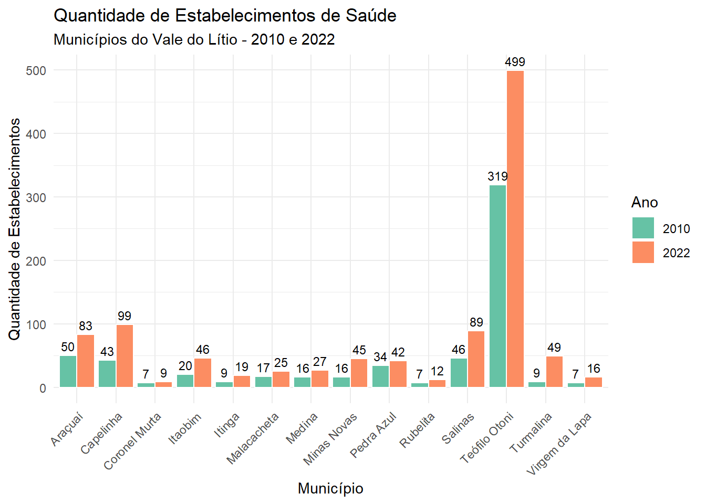
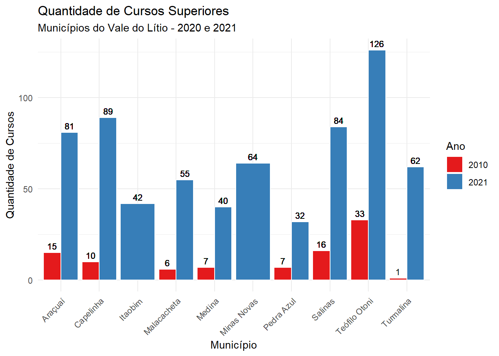
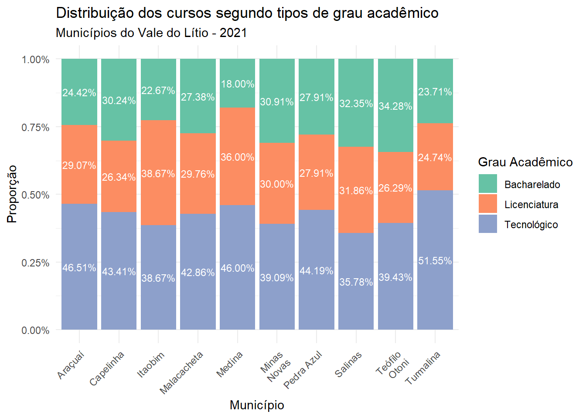

7 Equipamentos de saúde e educação
7.1 Qual a situação desses municípios em termos de equipamentos de saúde e educação?
Usando os dados do Cadastro Nacional de Estabelecimentos de Saúde (CNES) foi possível verificar o aumento dos estabelecimentos entre os anos de 2010 e 2022. Ressalta-se que nesse total incluem-se hospitais, tanto públicos quanto privados, hospitais gerais e especializados, além de clínicas e consultórios, unidades básicas de saúde, laboratórios, entre outros.
A figura a seguir ilustra a situação para cada um dos municípios analisados. Nesta medida, destaca-se Teófilo Otoni, que passou de 319 para 499 estabelecimentos de saúde cadastrados em 2022, um aumento de 56% em 12 anos.

Fonte: Ministério da Saúde (2022). Elaboração: FJP/Diretoria de Estatística e Informações.
Em termos dos leitos em cada um dos municípios, novamente Teófilo Otoni foi o destaque, com o maior número total de leitos, somando 352, com uma distribuição significativa em todas as categorias (especialmente em leitos cirúrgicos com 160 unidades).
Os municípios do Grupo 2 mostraram uma quantidade moderada de leitos, com Salinas possuindo o maior total do grupo, com 89 leitos. O Grupo 3 tem números mais reduzidos, sendo Itaobim o que apresenta o maior total, com 49 leitos. Por fim, o Grupo 4 tem uma situação particularmente crítica em termos de leitos hospitalares, com Coronel Murta e Itinga não apresentando leitos em nenhuma categoria, e Rubelita tendo apenas três leitos classificados como “Outros Leitos”. Virgem da Lapa possui 23 leitos, todos concentrados nas categorias de leitos clínicos e cirúrgicos. A tabela sugere diferenças significativas na capacidade hospitalar entre os municípios.
| Quantidade Leitos Hospitalares | ||||
|---|---|---|---|---|
| Municípios do Vale do Lítio - 2022 | ||||
| Municipio | Leito Clínico | Leito Cirúrgico | Outros Leitos | Total |
| Grupo 1 | ||||
| Teófilo Otoni | 121 | 160 | 71 | 352 |
| Grupo 2 | ||||
| Araçuaí | 39 | 18 | 28 | 85 |
| Capelinha | 20 | 7 | 27 | 54 |
| Salinas | 51 | 23 | 15 | 89 |
| Grupo 3 | ||||
| Itaobim | 26 | 14 | 9 | 49 |
| Malacacheta | 16 | 6 | 12 | 34 |
| Medina | 27 | 8 | 4 | 39 |
| Minas Novas | 29 | 7 | 16 | 52 |
| Pedra Azul | 32 | 11 | 1 | 44 |
| Turmalina | 31 | 5 | 6 | 42 |
| Grupo 4 | ||||
| Coronel Murta | 0 | 0 | 6 | 6 |
| Itinga | 0 | 0 | 0 | 0 |
| Rubelita | 0 | 0 | 3 | 3 |
| Virgem da Lapa | 19 | 4 | 0 | 23 |
Fonte: Ministério da Saúde (2022). Elaboração: FJP/Diretoria de Estatística e Informações.
No que se refere à formação de capital humano nos municípios do Vale do Lítio, optou-se pela análise do ensino superior, tendo em vista o potencial de demanda de mão-de-obra qualificada. Como se sabe, a produção de veículos elétricos ou mesmo de baterias para estes são atividades que exigem não só matérias-primas como o lítio, mas também mão-de-obra que atendam alguns requisitos mínimos que vão desde o conhecimento de várias línguas até o conhecimento dos diversos processos, por exemplo, envolvidos na reciclagem de baterias.
Com os dados do Censo da Educação Superior, é possível verificar a quantidade de cursos superiores ofertados (10 dos 14 municípios possuem oferta de ensino superior) e sua variação entre 2010 e 2021. Via de regra, todos os municípios apresentaram aumento no número de cursos superiores.

Fonte: Instituto Nacional de Estudos e Pesquisas Educacionais Anísio Teixeira (2022). Elaboração: FJP/Diretoria de Estatística e Informações.
Quando se analisa o grau acadêmico, a maioria oferta é de cursos tecnológicos e, a depender do município, a licenciatura vem em segundo lugar. Além disso, embora as informações sobre os cursos sejam precárias em termos do quantitativo de matriculas, percebe-se que apenas em um município há oferta de curso de engenharia, no caso, a engenharia civil.

Fonte: Instituto Nacional de Estudos e Pesquisas Educacionais Anísio Teixeira (2022). Elaboração: FJP/Diretoria de Estatística e Informações.
Outros cursos ofertados incluem: pedagogia, direito, administração, ciências contábeis, educação física, serviço social, matemática, interdiciplinar em ciência e tecnologia, pscicologia, enfermagem, ciências biológicas, fisioterapia e farmácia, entre outros.Não é difícil perceber que a adequação da formação de capital humano para as possíveis atividades no Vale do Lítio necessita de uma atenção especial, seja por meio do suporte de universidades públicas estaduais ou privadas.
#matemática, física, química, ciências contábeis, engenharia de alimentos, administração (presencial e à distância), administração pública, artes visuais, pedagogia, educação física, artes, análise e desenvolvimento de sistemas, engenharia agrícola e ambiental,pedagogia, história, direito, letras e gestão ambiental.
| Curso | Total de Matriculas |
|---|---|
| Araçuaí | |
| Pedagogia | 3387 |
| Administração | 2791 |
| Ciências Contábeis | 1209 |
| Educação Física | 1127 |
| Gestão Ambiental | 983 |
| Capelinha | |
| Pedagogia | 2574 |
| Administração | 1036 |
| Ciências Contábeis | 926 |
| Educação Física | 762 |
| Processos Gerenciais | 641 |
| Itaobim | |
| Pedagogia | 260 |
| Educação Especial | 127 |
| Administração | 37 |
| Serviço Social | 29 |
| Letras - Língua Portuguesa | 24 |
| Malacacheta | |
| Pedagogia | 334 |
| Administração | 85 |
| Letras - Português E Inglês | 83 |
| Pedagogia Ead | 68 |
| Ciências Contábeis | 55 |
| Medina | |
| Administração | 1066 |
| Pedagogia | 760 |
| Serviço Social | 745 |
| Educação Física | 687 |
| Ciências Contábeis | 683 |
| Minas Novas | |
| Pedagogia | 379 |
| Matemática | 302 |
| Educação Especial | 283 |
| Enfermagem | 249 |
| Serviço Social | 124 |
| Pedra Azul | |
| Pedagogia | 734 |
| Letras - Língua Portuguesa | 308 |
| Educação Física | 198 |
| Administração Pública | 148 |
| História | 141 |
| Salinas | |
| Pedagogia | 2814 |
| Ciências Contábeis | 2005 |
| Medicina Veterinária | 1566 |
| Administração | 1470 |
| Educação Física | 1355 |
| Teófilo Otoni | |
| Direito | 23395 |
| Pedagogia | 12426 |
| Administração | 8885 |
| Engenharia Civil | 8787 |
| Ciências Contábeis | 6504 |
| Turmalina | |
| Pedagogia | 622 |
| Administração Pública | 545 |
| Administração | 377 |
| Educação Física | 217 |
| Ciências Contábeis | 205 |
Fonte: Instituto Nacional de Estudos e Pesquisas Educacionais Anísio Teixeira (2022). Elaboração: FJP/Diretoria de Estatística e Informações.
A distância dos municípios aos aeroportos mais próximos é um indicativo relevante de acessibilidade e pode ter implicações significativas para o desenvolvimento econômico e a integração regional dos municípios.
Nos Grupos 1 e 2, observa-se uma vantagem considerável em termos de acessibilidade, pois todos os municípios mencionados possuem aeroportos diretamente em suas localidades, o que implica distância zero. Isso oferece vantagens imediatas em termos de transporte e logística, potencialmente atraindo mais negócios, turismo e serviços para essas regiões. A presença de aeroportos nos municípios de Teófilo Otoni, Araçuaí, Capelinha e Salinas é um ativo importante que pode facilitar o crescimento econômico e melhorar a qualidade de vida dos habitantes.
No entanto, para os municípios nos Grupos 3 e 4, a situação é mais desafiadora. Municípios como Itaobim, com uma distância de 455 km até o aeroporto mais próximo em Montes Claros, enfrentam barreiras significativas em termos de acessibilidade e conectividade. Isso pode limitar as oportunidades de desenvolvimento, reduzindo o potencial para negócios que dependem de transporte rápido e eficiente.
Municípios como Minas Novas, Pedra Azul e Rubelita têm distâncias menores (61 km, 87 km e 37 km, respectivamente), o que sugere uma melhor conexão em comparação com outros municípios do mesmo grupo, como Medina e Malacacheta, que estão a mais de 270 km de distância dos seus aeroportos mais próximos. Essas distâncias intermediárias podem oferecer algumas oportunidades, mas ainda representam desafios logísticos.
Por fim, os municípios de Coronel Murta, Itinga e Virgem da Lapa, todos com distâncias superiores a 240 km até o Aeroporto de Montes Claros, enfrentam limitações similares, o que pode dificultar o acesso a serviços e oportunidades fora da região.
Essa distribuição de distâncias aos aeroportos mais próximos destaca a desigualdade regional em termos de infraestrutura de transporte e sublinha a necessidade de políticas públicas que melhorem a conectividade dos municípios mais distantes para promover o desenvolvimento equilibrado e sustentável.
| Distância dos Municípios aos Aeroportos Mais Próximos | |||
|---|---|---|---|
| Grupo | Municípios | Distância (Km) | Aeroporto Mais Próximo |
| Grupo 1 | Teófilo Otoni | 0 | Aeroporto Kemil Kumaira |
| Grupo 2 | Araçuaí | 0 | Aeroporto Municipal de Araçuaí SNUI |
| Grupo 2 | Capelinha | 0 | Aeroporto Doutor Juscelino José Ribeiro |
| Grupo 2 | Salinas | 0 | Aeroporto de Salinas |
| Grupo 3 | Itaobim | 455 | Aeroporto de Montes Claros - Mário Ribeiro |
| Grupo 3 | Malacacheta | 271 | Aeroporto de Caratinga |
| Grupo 3 | Medina | 326 | Aeroporto de Montes Claros - Mário Ribeiro |
| Grupo 3 | Minas Novas | 61 | Aeroporto Doutor Juscelino José Ribeiro |
| Grupo 3 | Pedra Azul | 87 | Aeroporto de Almenara |
| Grupo 3 | Turmalina | 195 | Aeroporto de Montes Claros - Mário Ribeiro |
| Grupo 4 | Coronel Murta | 244 | Aeroporto de Montes Claros - Mário Ribeiro |
| Grupo 4 | Itinga | 301 | Aeroporto de Montes Claros - Mário Ribeiro |
| Grupo 4 | Rubelita | 37 | Aeroporto de Salinas |
| Grupo 4 | Virgem da Lapa | 253 | Aeroporto de Montes Claros - Mário Ribeiro |
| Fonte: Pesquisa local e dados aeroportuários. | |||